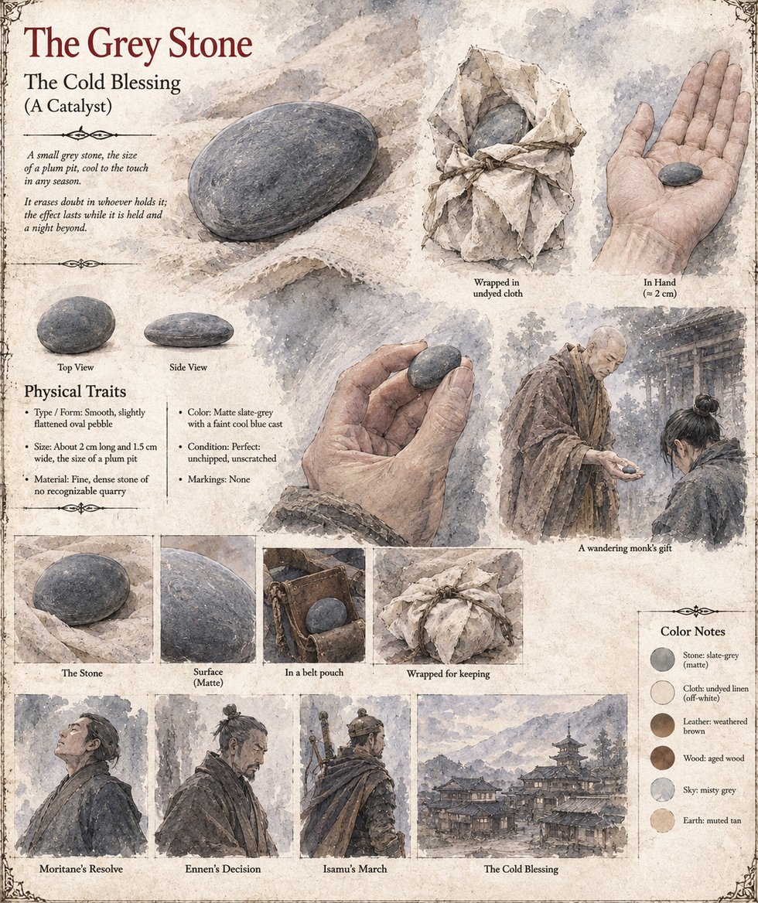

The Grey Stone
A small grey stone, cool in any season · the Catalyst of Case 3312 · the Cold Blessing
A small grey stone the size of a plum pit, cool to the touch in any season, that erases doubt in whoever holds it. The effect lasts while it is held and a night beyond. The pack’s blurb says it did nothing anyone could have called magic: it only took away the doubt that reasoning is made of. A wandering monk (the Observer) leaves it with Tadaie on the ninth of Iverin. Tadaie holds it while he reads omens and offers it up in the gift bundle Sadatomo arranges, which carries it to Ennen at Jakuen-ji. Isamu finds it on Ennen’s body and keeps it wrapped in undyed cloth in the rice-chest for the rest of his life.
It removes the hesitation from three men in succession, each at the point where his hesitation was the only thing between a sound system and a catastrophe: Moritane, with the eastward terraces, Ennen, with the collateral clause, and Isamu, with the march. The Archival Log files it as a High-Concept Cultural & Social Catalyst whose efficacy tracked the sincerity of the holder’s conviction, never any property of the stone. Three generations on, the villages call it the Cold Blessing and swear it was cut from the cooled heart of a fallen star (Epilogue ii). The package’s second title option takes that name, and the stone staying cool against Ennen’s chest all morning.
The manuscript fixes the size, the colour and the coolness. The pack adds the rest, and says so. The sheet makes it a smooth, slightly flattened oval pebble about 2 cm by 1.5 cm, of fine dense stone of no recognisable quarry, matte slate-grey with a faint cool blue cast, unchipped, unscratched and unmarked. It is shown top and side, on a fold of cloth, wrapped in a square of undyed linen tied with cord, in a belt pouch, between finger and thumb and in an open palm. Its larger scene, A wandering monk’s gift, has a bald old monk in a brown robe holding the stone out to a bowed, bare-headed figure with a topknot before a gate. Four small panels are captioned Moritane’s Resolve, Ennen’s Decision, Isamu’s March and The Cold Blessing, the last a mountain village with a pagoda.
These scenes do not match the characters’ own sheets. The recipient of the gift wears no cap, where Tadaie’s sheet has a tall black one; Ennen is drawn bearded, with a topknot, where his own sheet has a shaved head; Isamu is a cloaked, capped figure with weapons slung at his back, where his own sheet has a hoe; and Moritane is slim, where his own sheet is soft and stout. Take them as the Stone sheet’s vignettes, not as portraits.
“A small grey stone, the size of a plum pit and cool to the touch in any season, that erases doubt in whoever holds it.”